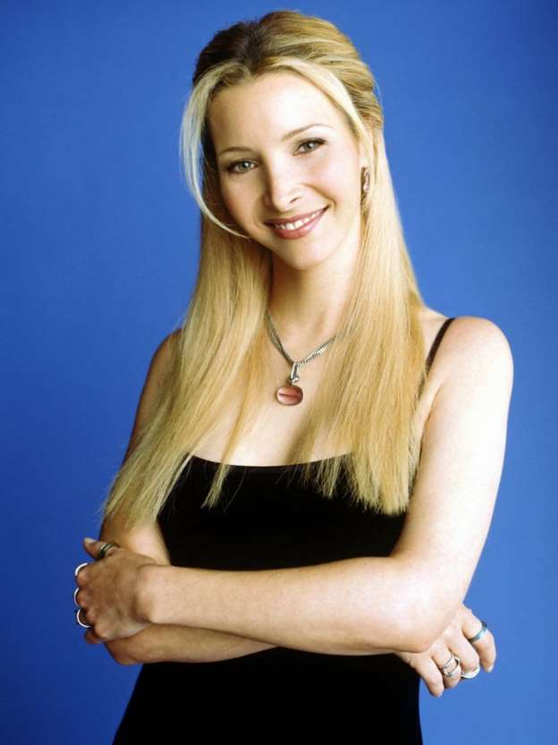

Phoebe Buffay saiu de casa aos 14 anos, e foi moradora
de rua antes de conhecer seus amigos. Excêntrica e
vegetariana, sua mãe se suicidou, e seu pai abandonou
a família. Ela e sua irmã gêmea, Ursula, se odeiam.
Conheceu seu meio-irmão, Frank, e aceitou ser "barriga
de aluguel" para ele, dando a luz a trigêmeos (Frank
Jr. Jr., Chandler e Leslie). Conheceu depois
sua mãe biológica, que também se chama Pheobe.
Trabalha como musicista (criando
músicas como "Gato Fedorento/Smelly Cat") e massagista.
Mesmo com todo histórico trágico, é uma pessoa muito tranquila
e amiga de todos. Se envolve com o cientista David, que termina
o relacionamento por ir para Minsk estudar física.
Na temporada final, ela se casa com Mike Hannigan,
construindo assim, a família
que sempre sonhou.
